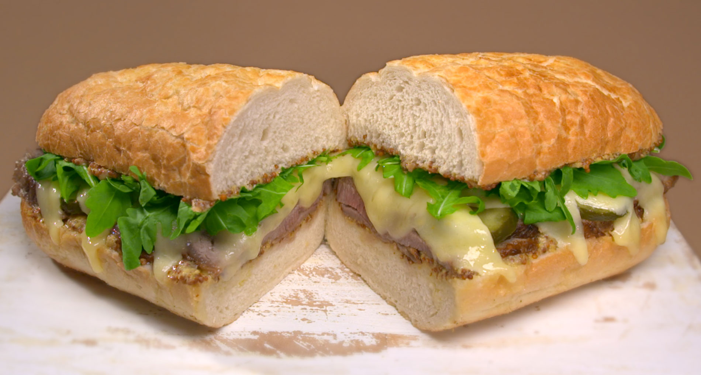

RECIPE OF LOAF SANDWICH
Prepare:SARA KHAN

INGRIDIENTS
- White bread toasted,
- Mayonnaise , as needed
- Lettuce, 2 Leaves
- Tomato,about 1/4 inch, 2 Slice
- Crisp cooked omelet, 3 strips
- Cheddar cheese, 60g, slice
INSTRUCTION:-
- Toast the upper partt of top slice and lower side of bottom slice.
- Plcae the three slice of toast on a clean work surface spread the top with Mayonnaise.
- On the frist slice,place 1 lettuce leaf, then 2 slice of tamato, then 3 strips of omele.
- Place the second slice of toast on top, spread side down.
- Spread the top with Mayonnais.
- On of this,place the chicken , then the other lettuce.
- Top with the thrid slice of toast ,spread side down.
- Cut the sandwich in to two triangles.
- The centre of the plate may be filled with pototo chips, french fires , or other garnish accompaniment.